Jayden Ma
Poughkeepsie, NY - Boston, MA
Boston University
Class of 2022
Mechanical and Aerospace Engineer
Poughkeepsie, NY - Boston, MA
Boston University
Class of 2022
Mechanical and Aerospace Engineer
Pursuit is a liquid bipropellant rocket developed by the Boston University Rocket Propulsion Group, propelled by a nitrous oxide (N2O)-isopropyl alcohol (IPA) engine and pressure-fed by nitrogen.

Pursuit liquid bipropellant rocket assembly.
The goal of the feed system is to deliver the N2O and IPA from the tanks to the engine at their required pressure, density, and mass flow rate using an onboard nitrogen pressurization system to transport the propellants.
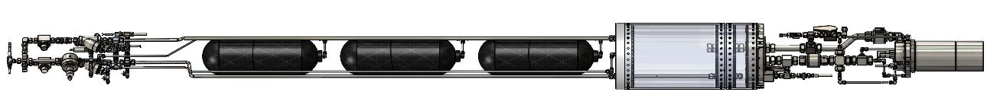Complete pressurized feed system mated with Pursuit's engine, tanks, bulkheads, and composite-overwrapped pressure vessels.
As a junior in Spring 2021, I took on leading the feed system design, and leading the overall vehicle fluid systems team after the prior lead stepped down to graduate. Being on the gas generator design previously, I was unfamiliar with the feed system, which had completed the preliminary design phase with the former lead. At the beginning of the semester, Pursuit's lead engineers decided to remove complex, unproven systems to ensure a successful launch, so the vehicle plumbing had to be quickly redesigned before clearing its critical design phase. I learnd the fluid mechanics involved rapidly and finish out the re-design, leading it through a critical design review by the end of the semester.
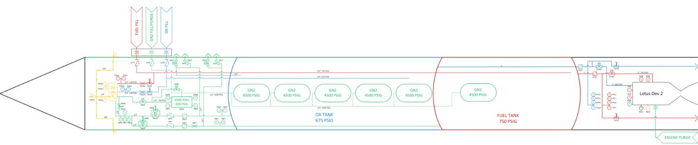Old piping and instrumentation diagram of Pursuit's pressurized feed system before my redesign.
First, I adjusted the feed system architecture to remove active pressurization controls and the gas generator system. The gas generator produced hot exhaust gases to heat up pressurant to increase the efficiency of the propellant feed, while the active pressurization controls were bang-bang controls used to regulate the temperature and pressure of the fluids to keep it at nominal conditions. Both increased the rocket's performance, but weres complex enough to require their own testing campaign; COVID-19 created logistical complications that pushed our timeline back one year, so the team had to scrap these systems and save them for the future. These changes were first reflected in redesigning the piping and instrumentation diagram, which taught me to use Visio to modify P&IDs.
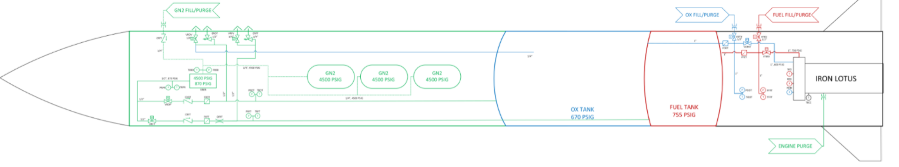Piping and instrumentation diagram of Pursuit's pressurized feed system after simplifying vehicle.
With the removed systems, we also decided to move the propellant fill valves from the airframe to fin can, as the propellants are no longer used for the gas generator in the airframe. This allows us to fill and dump the propellant using the same valves, further simplifying the system. Further changes that were made in Fall 2021 to continue simplifying the vehicle included changing the engine from Lotus Dev 2, which is regeneratively cooled, to Iron Lotus, which is heatsink cooled. This led to reducing the burn time to what is possible for the new engine, decreasing the tank lengths for the propellant and number of composite-overwrapped pressure vessels (COPVs) for the pressurant. We also moved the COPVs out of the oxidizer tank and into the airframe; since there is no more heat exchanger to increase pressurant temperature, keeping it in the ambient airframe would be more efficient than the colder oxidizer tank.
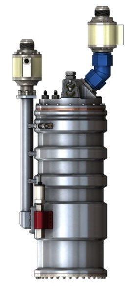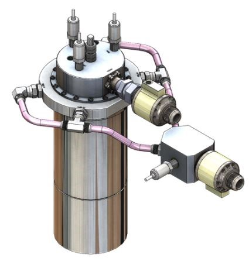(a) Lotus Dev 2, the former planned flight engine which has a regenerative cooling jacket. (b) Iron Lotus, the current planned flight engine which is a simple heatsink.
Removing components meant the pressure set on the system regulator for the pressurization system also had to change. Fortunately, the previous lead created a MATLAB script to automatically calculate the necessary set pressure given fluid properties, vehicle requirements, and component flow coefficients. However, using the tool required intuition for pressure losses, so I learned to calculate pressure drops for incompressible and compressible flow to use the tool and redo the pressure budget.
We referenced the new P&ID to remove selected components that were now obsolete, so I learned the components sourced for the feed system, and removed components related to the active pressurization and gas generator; I also checked that the remaining components were still rated properly for the vehicle pressure, temperature, and flow requirements. This took out almost half of the components simplified the feed system greatly. We compiled the component specifications and vehicle requirements into a document for industry advisors to audit as a design review. The document format was more efficient than a live presentation of every specification, which was done for the preliminary design review. Because of this, the format that I made was reused for the ground support equipment components review.
With the P&ID and component selection finalized, I took over modeling the feed system in Solidworks, starting from scratch. Completing the feed system CAD taught me how to route piping and component assemblies, where the challenge was in fitting the components in the small 12-inch diameter allotted in the airframe and fin can of the vehicle, and connect every component with proper tubing and fittings. This remains the best demonstration of my proficiency in Solidworks.
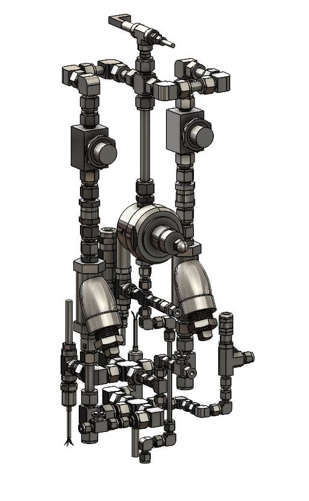 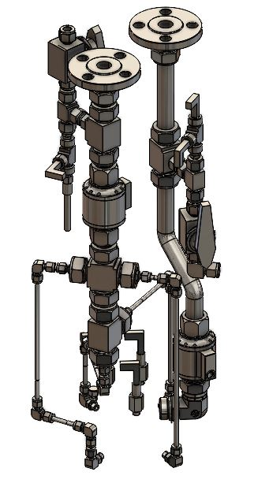(a) CAD assembly of airframe propellant pressurization system. (b) CAD assembly of fin can propellant feed system.
Throughout the semester as the responsible engineer for vehicle fluids, I integrated the fluid subsystem with the avionics, ground support, and structures subsystems of Pursuit. With avionics, I ensured each instrumentation had input voltages within range of the microcontroller. With structures, I worked with the bulkhead designers to select feedthrough fittings for fluid ports, and helped design mounting hardware to attach the feed system onto the airframe; the mounting hardware consisted of plates that support the piping using bulkhead fittings, with brackets fastened to the airframe rails to support the plates. With the ground support system, I helped select hoses and quick disconnects to connect the fill valves to the propellant cylinders and drafted operations for propellant loading.
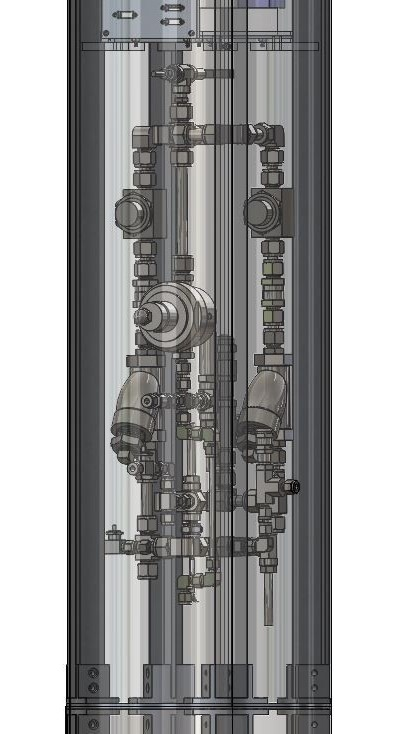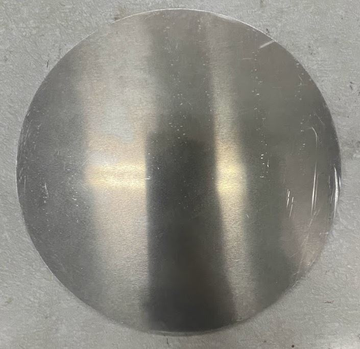(a) Propellant pressurization system contextualized within the constraints of the 12" rocket diameter. (b) Machined aluminum plate that would have bulkhead fitting ports to support the feed system piping.
Alongside finishing the design, I was the system engineer responsible for drafting operations for the vehicle test and launch. This was an important learning experience because of the expertise in handling nitrous oxide, the oxidizer. The fundamental knowledge from N2O can be applied to true cryogenic propellants, such as liquid hydrogen, oxygen, and methane. Alongside the ground systems lead, we collaborated on the fill and launch operations the vehicle, both for ground testing and launch. We used extensive advice from an alumnus who had worked with N2O at Scaled Composites.
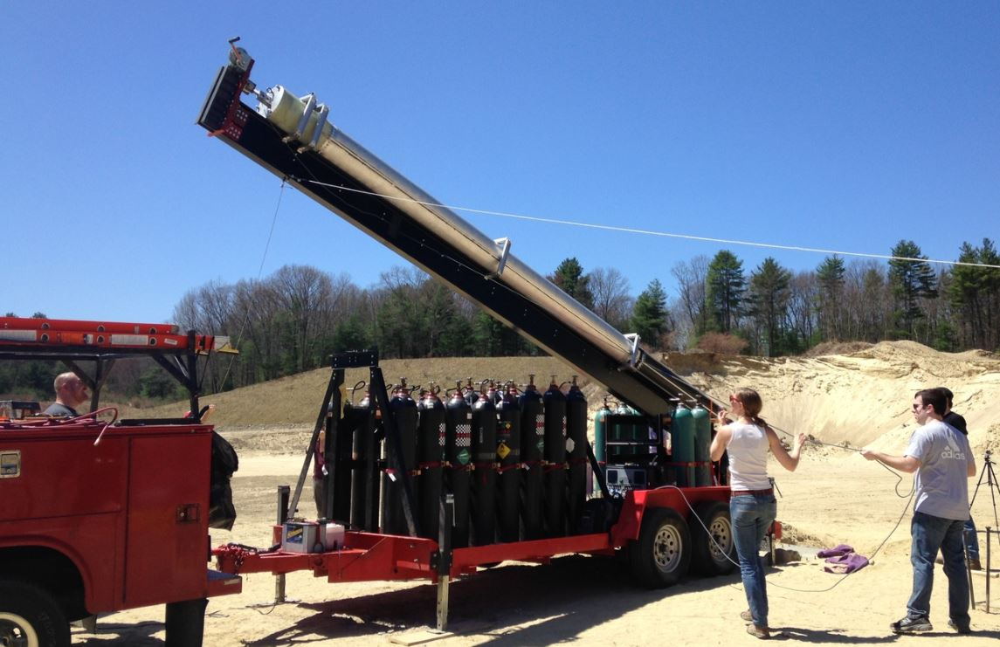ATLAS (Advanced Trailer Launch and Support), the mobile ground support system used to launch BURPG's rockets.
While isopropyl alcohol and nitrogen were simpler as they were used at ambient conditions provided by vendors, nitrous oxide requires density conditioning to reach -22 F as required by the engine design. This conditioning is required to compress nitrous oxide close to liquid state, because N2O is semi-gaseous and self-pressurized at 745 psig at ambient temperature. We designed piping specifically for this: a vent tube was added in the oxidizer tank, as seen in the P&ID, and opening the vent valve causes evaporative cooling as the gaseous, self-pressurized N2O escapes, expands, and cools. Eventually the cooling reaches -22 F, and following the saturated liquid thermodynamic curve, the N2O also reaches its design density for the engine.
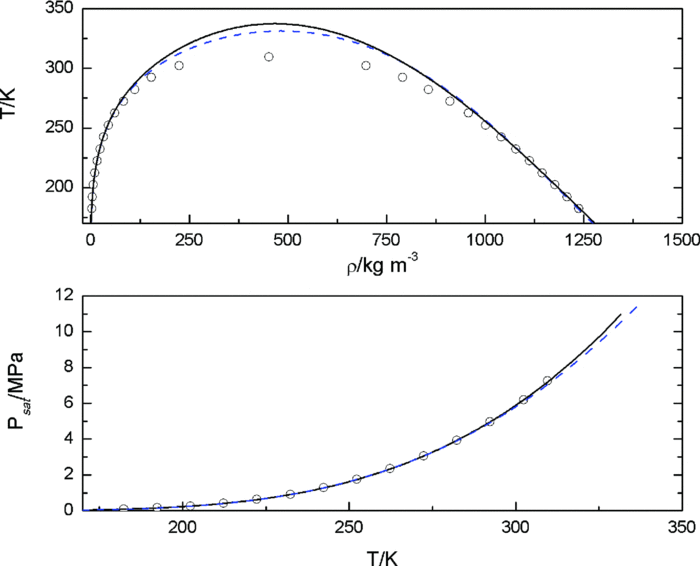Temperature-density curve and pressure-temperature curve of nitrous oxide that was used to reach design density.
Other considerations made in nitrous handling included requiring venting in short bursts to prevent uncontrolled evaporative cooling where the N2O cools into a solid, and increasing pipe area to prevent the N2O from flowing fast enough to risk detonation. The nitrogen similarly has to be filled in bursts to prevent adiabatic cooling that would damage components. The engine would be purged with low-pressure nitrogen before any tests or launches to clear out any foreign object debris or propellant remnants. We also decided the IPA operations are manually operated for system simplicity and the N2 and N2O are remote controlled for personnel safety.
At a high level, the final order of filling operations is manually purging the engine with low-pressure nitrogen, and opening the fuel fill valve for the ambient condition isopropyl alcohol fuel with a low-pressure pump. Then the team would go to the control panel to resume the operation from 400 meters. The pressurant fill valve are opened in bursts to fill the compositive-overwrapped pressure vessels, and then the fuel pressurization valves are opened to pressurize the IPA. The nitrous oxide fill valve is then opened to fill the oxidizer tank, and then vented in bursts until the -22 F is reached. Finally, the vehicle detaches from the ground systems via the remote quick disconnect actuators, the main engine pyro valves are opened with an electronic igniter, and the engine itself is ignited with a small rocket motor for liftoff.
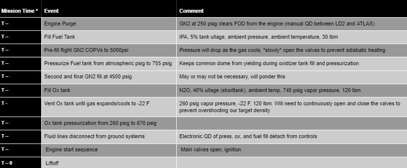Official concept of operations chart, pending experimental data to understand mission timing.
Other operations I advised on included drafting an order of operations for the assembly of the feed systems and its interfaces with the structures team. I advised on creating a test plan summary for pressure drop testing of the components to verify the pressure set for the regulator, and led the design of the test stands for compressible gaseous flow and incompressible liquid flow.
With the design finished, my focus in Fall and Spring 2021 was in testing systems that were custom-designed by the team to validate them as the vehicle was assembled. One of these was our custom servo-actuated valve assemblies, which were designed because of the expensive cost of solenoid valves with a high enough flow coefficient. The assembly consists of a handle-removed ball valve for controlled fluid flow, high-torque servo motor to turn the valve, flexible coupler to hold the servo shaft to the valve stem, and 3D printed mount to hold the other 3 components static.
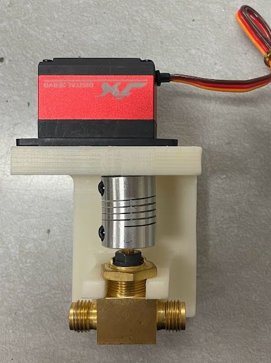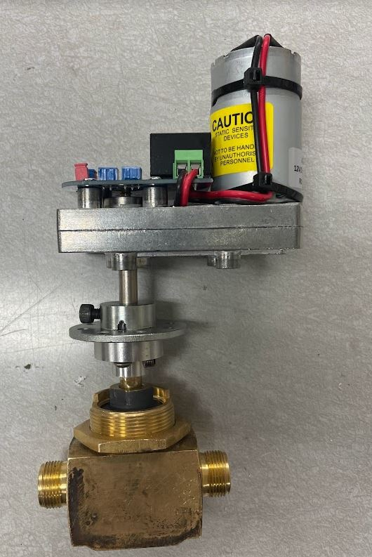(a) 1/4" servo valve assembly that has been successfully actuated. (b) Coupled 1/2" servo valve assembly awaiting to be tested.
While the 1/4" ball valves required lower torque at 20 kg-cm, the 1/2" ball valves were estimated to require 100 kg-cm, which made sourcing low-cost motors complicated. These assemblies were tested to be able to turn with low difficulty.
Nearly successful actuation test for 1/2" servo valve.
To rapidly test components, my team designed and built a water flow test stand that would function to flow test components. One initial intention of the test stand was to test the component pressure losses against their calculated, but it was eventually realized that the resolution of the instrumentation was too limited to read pressure drops on the scale of several psig.
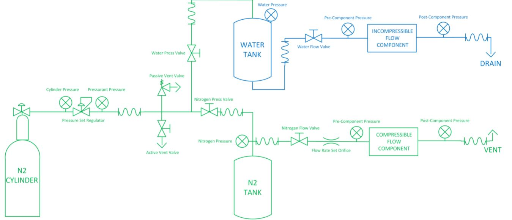Theoretical piping and instrumentation diagram, though a simplified version was built out of available resources.
However, the stand was used to test the operation of commercial components, such as setting the anti-tamper nut regulator, setting the variable relief valves, actuating the aforementioned servo valves, and reading the pressure transducers. I wrote code and build electronics that simulate the vehicle flight controller to test the servo valves and transducers on the test stand, with a rough calibration done using a pressure gauge and shop air.
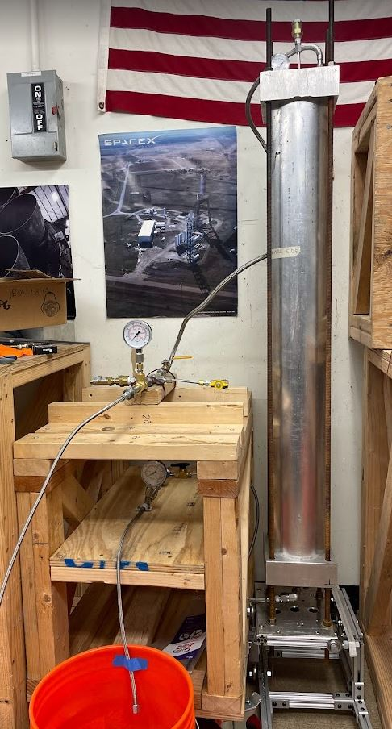Water flow test stand setup with regulator, servo valve, relief valve, and transducer used for flight.
Another custom component were the filters in the fin can. Because the fin can had extremely limited space, instead of plumbing in large 1" filters, we opt to place stainless steel meshes into the flanged outlet of the tanks. The assembly consists of the flanges for both the oxidizer and fuel lines mated on the fuel tank bulkhead; they are bolted together with four 5/8-18 bolts and face sealed with an o-ring. Within the o-ring grooves pockets are machined on the fuel dome for the steel mesh to sit. Ultimately the purpose is to catch rocks and other large debris, as there are finer filter upstream of the tanks in the pressurization system.
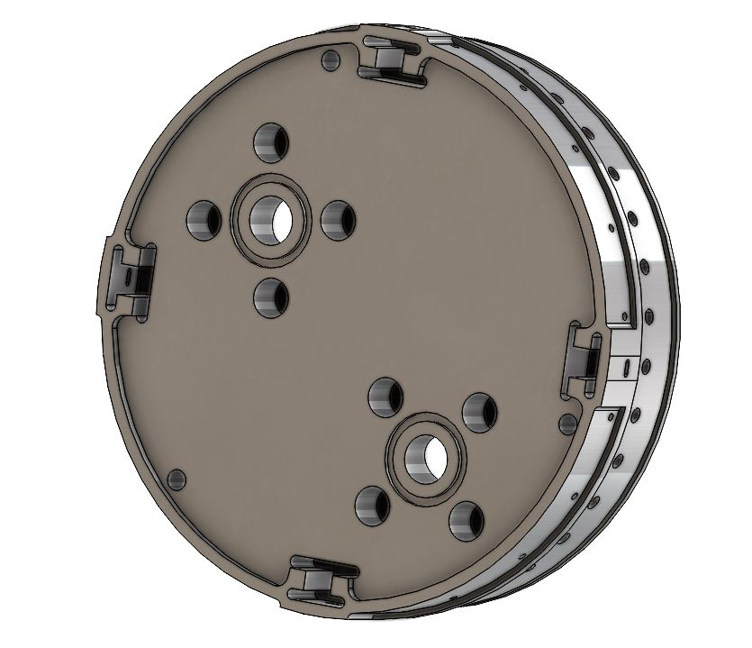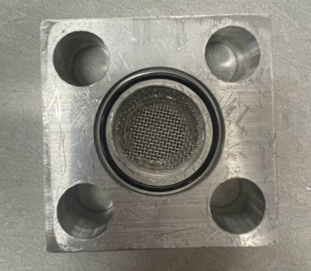(a) Actual interface where both flanges are mated with the fuel bulkhead. (b) Aluminum mockup of fuel bulkhead interface, with epoxied mesh, o-ring, and bolt holes.
To prevent damage to the expensive fuel bulkhead, a mockup of the interface was machined with the same geometry and material. With the flange, it was tested using the test stand to seal properly, ensuring that the custom assembly will not leak propellant around the engine exterior.
Full flow leak check using soapy water successfully showing no leaks.
Proving these custom components is necessary to ensure the entire feed system will function without critical failure. With the validation done throughout the 2021-22 year, assembly of the components can begin and the entire system can be built by the end of the following semester.